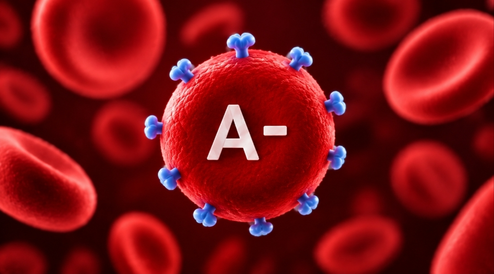

فصيلة الدم -A هي فصيلة نادرة نسبياً، ويحملها حوالي 6.3% من البشر . تتميز بوجود مستضد A وغياب عامل ريسوس (Rh) على خلايا الدم الحمراء على عكس الفصيلة الموجبة، تتطلب الحامل بفصيلة -A احتياطات طبية خاصة؛ فإذا كان الجنين موجباً، قد ينتج جسم الأم أجساماً مضادة تهاجم دم الجنين في الحمل التالي . ولضمان سلامة الحمل، يتم إعطاء الأم حقنة وقائية (Anti-D) خلال الحمل وبعد الولادة لمنع تكوّن هذه المضادات تماماً.

تحب التناسق والتنظيم وتميل للسلام. تتعامل بشكل جيد مع الآخرين وحساس وصبور وحنون. من عيوبك العناد وصعوبة الاسترخاء.
النظام يحاكي خطوات الفحص الحقيقة بشكل علمي صحيح, لكنه مصمم لأهداف تعليمية فقط. الفحص النهائي المعتمد يجب ان يتم تحت إشراف طبي مخبري.
Designed & Developed with ❤️ by ENG:MomenSobhiSkaik